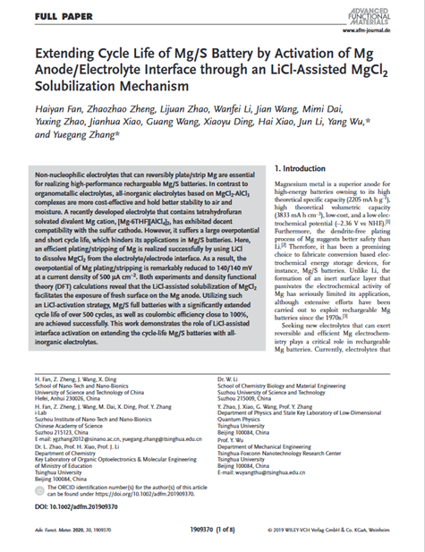

2020
- Identification of the Electronic and Structural Dynamics of Catalytic Centers in Single-Fe-Atom Material
- Xuning Li, Chang-Su Cao, Sung-Fu Hung, Ying-Rui Lu, Weizheng Cai, Alexandre I. Rykov, Shu Miao, Shibo Xi, Hongbin Yang, Zehua Hu, Junhu Wang, Jiyong Zhao, Esen Ercan Alp, Wei Xu, Ting-Shan Chan, Haoming Chen, Qihua Xiong, Hai Xiao, Yanqiang Huang, Jun Li, Tao Zhang, Bin Liu
- Chem 6 (12), 3440-3454

- Theoretical Understandings of Graphene-based Metal Single-Atom Catalysts: Stability and Catalytic Performance
- Hong-Ying Zhuo, Xin Zhang, Jin-Xia Liang, Jin-Xia Liang, Qi Yu, Hai Xiao, and Jun Li
- Chem. Rev. 2020, 120, 21, 12315–12341

- 3. Unravelling the Enigma of Nonoxidative Conversion of Methane on Iron Single‐Atom Catalysts
- Dr. Yuan Liu, Dr. Jin-Cheng Liu, Teng-Hao Li, Zeng-Hui Duan, Dr. Tian-Yu Zhang, Ming Yan, Dr. Wan-Lu Li, Prof. Dr. Hai Xiao, Prof. Dr. Yang-Gang Wang, Prof. Dr. Chun-Ran Chang, Prof. Dr. Jun Li
- Angewandte Chemie International Edition 59 (42), 18586-18590

- Selective hydrogenation of acetylene on graphene-supported non-noble metal single-atom catalysts
- HY Zhuo, X Yu, Q Yu, H Xiao, X Zhang, J Li
- Science China Materials 63 (9), 1741-1749

- Synergy between a Silver–Copper Surface Alloy Composition and Carbon Dioxide Adsorption and Activation
- Yifan Ye, Jin QianJin Qian, Hao Yang, Hongyang Su, Kyung-Jae Lee, Ane Etxebarria, Tao Cheng, Hai Xiao, Junko Yano*, William A. Goddard III*, and Ethan J. Crumlin*
- ACS applied materials & interfaces 12 (22), 25374-25382s

- Facet Engineering in Metal Organic Frameworks to Improve Their Electrochemical Activity for Water Oxidation
- J Wan, D Liu, H Xiao, H Rong, S Guan, F Xie, D Wang, Y Li
- Chemical Communications 56 (31), 4316-4319

- Two-Dimensional SnO2 Nanosheets for Efficient Carbon Dioxide Electroreduction to Formate
- J Li, J Jiao, H Zhang, P Zhu, H Ma, C Chen, H Xiao, Q Lu
- ACS Sustainable Chemistry & Engineering 8 (12), 4975-4982

- Correction: Tuning radical interactions in trisradical tricationic complexes by varying host-cavity sizes
- Kang Cai, Yi Shi, Changsu Cao, Suneal Vemuri, Binbin Cui, Dengke Shen, Huang Wu, Long Zhang, Yunyan Qiu, Hongliang Chen, Yang Jiao, Charlotte L Stern, Fehaid M Alsubaie, Hai Xiao, Jun Li, J Fraser Stoddart
- Chemical Science 11 (10), 2861-2861

- Extending Cycle Life of Mg/S Battery by Activation of Mg Anode/Electrolyte Interface through an LiCl‐Assisted MgCl2 Solubilization Mechanism
- Haiyan Fan, Zhaozhao Zheng, Lijuan Zhao, Wanfei Li, Jian Wang, Mimi Dai, Yuxing Zhao, Jianhua Xiao, Guang Wang, Xiaoyu Ding, Hai Xiao, Jun Li, Yang Wu, Yuegang Zhang
- Advanced Functional Materials 30 (9), 1909370

- Constructing High-Loading Single-Atom/Cluster Catalysts via an Electrochemical Potential Window Strategy
- JC Liu, H Xiao, J Li
- Journal of the American Chemical Society 142 (7), 3375-3383

- Tuning radical interactions in trisradical tricationic complexes by varying host-cavity sizes
- Kang Cai, Yi Shi, Changsu Cao, Suneal Vemuri, Binbin Cui, Dengke Shen, Huang Wu, Long Zhang, Yunyan Qiu, Hongliang Chen, Yang Jiao, Charlotte L Stern, Fehaid M Alsubaie, Hai Xiao, Jun Li, J Fraser Stoddart
- Chemical Science 11 (1), 107-112

- Chemical design and synthesis of superior single-atom electrocatalysts via in situ polymerization
- Haomin Xu, Shibo Xi, Jing Li, Shikai Liu, Pin Lyu, Wei Yu, Tao Sun, Dong-Chen Qi, Qian He, Hai Xiao, Ming Lin, Jishan Wu, Jia Zhang, Jiong Lu
- Journal of Materials Chemistry A 8 (34), 17683-17690